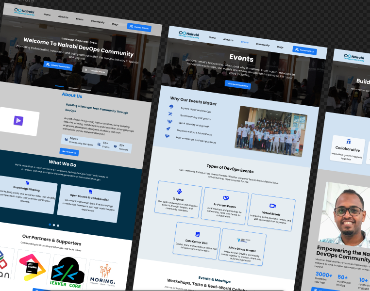
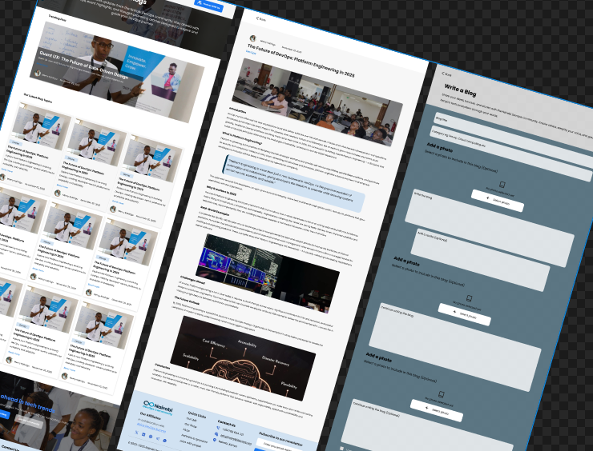

Community members
Discover events, activities, resources and opportunities.
01
Redesigning the digital experience for a growing DevOps community.
A UX/UI redesign focused on improving usability, information architecture and community engagement across events, content, campus initiatives and support.

Nairobi DevOps Community is a free, non-profit, volunteer-led technology community in Kenya that brings together professionals, students, developers and enthusiasts passionate about DevOps, cloud computing and IT infrastructure.
I joined the project as a volunteer UI/UX designer after seeing a LinkedIn post looking for someone to help improve the community's digital experience.
I saw the opportunity as a chance to apply the UX/UI skills I had been learning to a real organization with real users, real requirements and real constraints.
Rather than simply refreshing the visual appearance, I rethought how the website could support the different ways people interact with Nairobi DevOps.
THE EXISTING EXPERIENCE
Some links and buttons were not working as expected, making it difficult for users to know where an action would take them.
Hover states were either incorrectly implemented or difficult to notice, reducing interaction clarity.
Some content, including roles and other information, needed stronger visual hierarchy and readability.
The experience lacked important features such as a dedicated blog, clearer events and campus engagement.
"How can the website better support the different ways people want to discover, learn from, participate in, and contribute to the community?"
I was responsible for the UX and UI design of the redesigned experience.
Discover events, activities, resources and opportunities.
Learn about DevOps, cloud, infrastructure and technology.
Find events, networking and knowledge-sharing opportunities.
Share knowledge and experiences through community articles.
Connect with Nairobi DevOps through campus initiatives.
Support the community through donations, partnerships or expertise.
I worked closely with a community event organizer, who is also a DevOps engineer, throughout the design process.
These conversations helped me understand what the community actually needed, which problems mattered most and which features would provide real value.
Feedback also introduced new requirements that weren't part of my initial thinking.
At the same time, some ideas were removed when we determined that they were not necessary.
Before designing all of the final screens, I created a sitemap to understand how the different parts of the website would connect.
Instead of treating every feature independently, I considered how the experiences connected to one another.
Home → Upcoming Event → Event Details → Registration
Community → Campus Tour → Propose Your Campus → Form
Blog → Article → Individual Blog Post
Blog → Add Blog → Submission Form
Home → Donation → Support Options
FROM PAGES TO ACTIONS
Homepage → Events → Event Details → Register
Events → Past Events → Previous activities / recordings
Blog → Article → Read
Blog → Add Blog → Submit Blog
Community → Campus Tour → Propose Your Campus → Form
Reviewed the existing website and documented usability problems, broken interactions and missing functionality.
Discussed the problems and requirements with the community event organizer.
Mapped the website structure and destinations of important CTAs.
Mapped important journeys such as event registration and campus proposals.
Explored layout and information hierarchy before final UI.
Translated the structure into high-fidelity screens.
Connected screens into an interactive prototype.
Incorporated stakeholder feedback and refined the experience.
THE ENTRY POINT
The homepage brings together the community's purpose, activities, upcoming events, past events, testimonials, FAQs, partners, calls-to-action and newsletter engagement.
Events are an important part of a technology community, so the redesigned experience needed to support more than simply displaying event names.
The design communicates event type, date, time, location, description and registration action.
I also considered online sessions, in-person events, data-center visits and larger community events.
Not every visitor arrives looking for an upcoming event.
Some users want to understand what Nairobi DevOps has previously organized or watch recordings from previous activities.
Past events therefore became part of the wider event experience rather than an afterthought.
KNOWLEDGE SHARING

One of the gaps identified in the existing experience was the absence of a dedicated blog.
The new Blog experience allows visitors to browse content by title, category, author, publication date, description and imagery.
A focused reading experience with clear article hierarchy, imagery, authorship and structured content.
A contribution journey allowing community members to share their knowledge and experiences.
The Community page gives visitors a deeper understanding of Nairobi DevOps and the ways they can engage with it.
It brings together community identity, leadership, activities, courses, events, initiatives, campus engagement and collaboration opportunities.
University students who wanted Nairobi DevOps to visit their institution needed a clear way to express that interest.
I designed a dedicated Propose Your Campus section and supporting pop-up form.
The journey became:
I designed a dedicated Donation page to make supporting Nairobi DevOps feel like part of the wider community experience.
The experience communicates different ways individuals and organizations can contribute.
PRODUCT THINKING
Instead of asking what pages the website should have, I asked what users should actually be able to accomplish.
Interactive components needed to clearly communicate their state and possible action.
Structure, spacing, typography and visual emphasis helped users understand what information mattered and what to do next.
Because this was a real organization, the designs did not move directly from wireframe to final UI.
I received feedback throughout the process. Some feedback improved existing ideas, some introduced new requirements and some helped determine that an idea wasn't necessary.
This taught me that design isn't a linear activity.
The organization already had an established website, content, identity and expectations.
Students, professionals, contributors, universities and supporters have different goals.
New features required thinking beyond individual screens and considering the wider product experience.
Stakeholder involvement meant the design evolved throughout the project.
The project resulted in a redesigned website experience covering key areas of the Nairobi DevOps community. The work was developed into a clickable prototype and reviewed with the community stakeholder throughout the process.
The experiences described here represent the work I designed. Because implementation was ongoing, functionality may have been implemented or changed after the design work.
WHAT I LEARNED
This project changed the way I think about UI/UX design.
When I started, I was excited about the opportunity to create a real website. By the end, I understood that the most important part of the work wasn't the visual interface itself.
It was the thinking behind it.
How can I design something that works for the people using it and the organization behind it?
Nairobi DevOps gave me the opportunity to move from designing interfaces as individual screens to thinking more deeply about products, systems, journeys and real-world constraints.